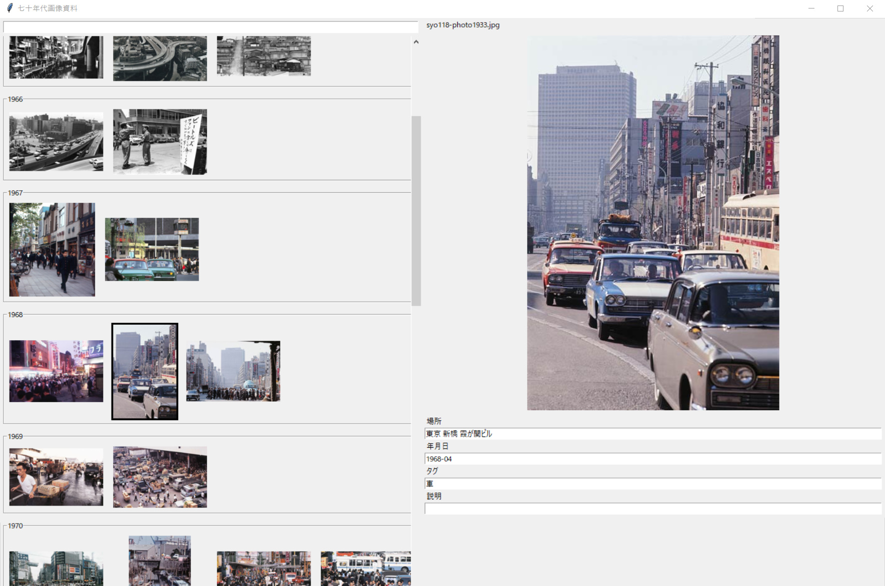

美学ウィキというCosenseプロジェクトを作りました
2026-02-08
日本語圏インターネットでの「美学ミーム」に類するものを体系立ててみようという試みです。 これはなに？ここです。 美学ウィキ プロジェクト内にプロジェクトの説明と、美学ミームそのものの簡単な説明のページ...

生活VJ
2026-01-19
作り方コンセプト友人のendenさんに生活coreという美学を提唱されたところから、ビジュアル面のコンセプト制作が始まりました。 商店街や団地、公園のような時代の進歩から取り残されゆっくりと衰退する日...
Bongo Kanade つくった！
2026-01-08
デスクトップマスコットを作りました！ 使用したボイス以下の配信からお借りしています ｶﾅﾃﾞ～ 【対談】かわいいかわいい後輩の奏さんとお話がしたい #ぽるかなで対談 https://www.youtu...

資料画像を軽く整理するツール
2026-01-05
目的Scrapbox主体で貯めている60-70年代の国内の様子について、画像のリンク切れや集積の難しさの問題があり、 またローカルではエクスプローラーのファイル分けと既存のタグつけツールの煩雑さの問題...

年の報告2025
2025-12-31
2025年お疲れ様でした木葉はづくです。 今年は全体的に外側に出過ぎて徘徊している気分でした。ちょっと遠すぎるかもです。 もうすこし内側に行きたいですね。 ともかく、良いお年を。 今年した新しいことi...

ポートフォリオの逆
2025-12-30
PCの操作系統を監視してビジュアライズするツールを用意しました。 いつも起動時に動き始めるpyファイルがあり、私の生活を少しだけ雑にしてくれるのですが、その機能の一つです。 構造pyでPCの状態をみて...

CRTディスプレイの再現
2025-12-10
ファイルCRT_scan.fs 使い方ISF4AEを使ってください。詳しくは AE向けのXY別軸の桑原(Kuwahara)フィルタ にあります。 またTIMEを使う関係でUse Layer Timeに...

AE向けのXY別軸の桑原(Kuwahara)フィルタ
2025-11-14
映像を作りました こういう映像を作りました。手書き感の演出としてKuwaharaフィルタを使う予定でしたが、既存エフェクトプラグインでは応用できなさそうなことと、実装に関してすでに計算式を入手できて簡...

ブログらしきものを作る。
2025-10-31
noteが微妙にSNS過ぎてあまり嬉しくないのと、もう少しつぶやき感覚でありながらscrapboxほど簡単ではない手数の環境を手に入れたくなりました。 noteは背景が白すぎる。 構造としては blo...